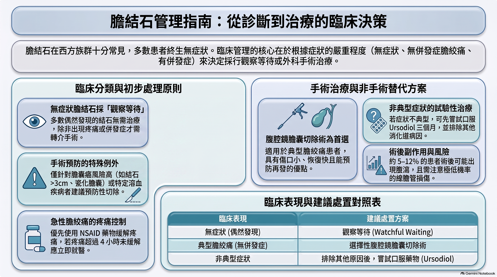

【膽結石粉絲專頁｜真實故事分享】
阿仁今年45歲，體檢超音波突然發現膽囊裡有幾顆結石。
醫生說：「目前沒有明顯症狀，先觀察就好。」
但他心裡一直轉著幾個問題：
❓ 「一定要開刀嗎？」
❓ 「不開刀會不會出事？」
❓ 「怎麼避免突然痛起來？」
❓ 「有沒有藥或食物可以把結石溶掉？」
今天就用阿仁的故事，把這些問題一次講清楚。

一、一定要開刀嗎？
大多數沒有症狀的人，不需要立刻開刀。
醫學上把膽結石分成三種情況：
| 情況 | 建議處理方式 |
|---|---|
| 完全無症狀（偶然發現） | 觀察等待，不建議預防性切除 |
| 典型膽絞痛（右上腹或上腹劇痛，持續30分鐘～6小時，常伴噁心、出汗） | 建議安排「選擇性腹腔鏡膽囊切除術」 |
| 已出現併發症（急性膽囊炎、膽管炎、胰臟炎等） | 必須積極治療，多數需要手術 |
阿仁目前只是超音波發現結石、沒有痛過，屬於「無症狀膽結石」。根據大型研究和準則，多數人終生都不會出現症狀，預防性開刀反而可能帶來不必要的風險，所以先觀察是合理選擇。
例外需要考慮手術的情況（即使無症狀）：
- 結石特別大（尤其超過3公分）
- 瓷化膽囊
- 膽囊息肉／腺瘤
- 異常胰管引流
- 某些溶血性血液疾病
這些情況膽囊癌風險較高，醫師會個別評估。
二、不開刀會發生什麼事？
最常見的自然病程是：
- 繼續無症狀（多數人）
- 出現膽絞痛（約每年1–2%的人會開始有症狀）
- 少數進展成併發症（急性膽囊炎、總膽管結石、胰臟炎等）
重要觀念：
症狀通常不會一開始就很嚴重。多數人先有輕微或典型的膽絞痛，之後才可能惡化。所以只要學會辨識症狀，並在發作時及時就醫，就能大幅降低嚴重併發症風險。
三、如何預防症狀突然發作？
目前沒有保證100%不會發作的方法，但可以降低機會：
飲食原則（最實用）
- 減少高油脂、油炸、肥肉、奶油、全脂乳製品
- 避免一次吃大量油膩食物（這是最常見的誘發因子）
- 保持正常體重，避免快速減重（快速減重反而容易長新結石）
- 規律進食，不要長時間空腹
生活習慣
- 適度運動
- 維持理想體重
※ 這些方法可以減少膽絞痛發作機會，但無法讓已經形成的結石消失。
四、有沒有藥或食物可以溶解結石？
口服藥物（熊去氧膽酸 / Ursodiol）
- 只對「膽固醇結石」、體積小、膽囊功能還正常的人有效
- 需要長期服用（常常1–2年以上）
- 停藥後結石很容易再長回來
- 適合無法或不願手術的特定患者
食物方面
目前沒有任何食物被證實能有效溶解膽結石。
網路上流傳的「檸檬水、蘋果醋、橄欖油排石」等方法，科學證據不足，甚至可能引發絞痛或總膽管阻塞，不建議自行嘗試。
衛教簡報參考圖解


💡 阿仁現在該怎麼做？
- 先確認自己是哪一類型：把超音波報告和症狀詳細告訴醫師，確認是「無症狀」還是已經有過膽絞痛。
- 學會辨識膽絞痛：右上腹或上腹部突然劇烈悶痛，可能放射到右肩胛，常伴隨噁心、嘔吐、冒冷汗，持續超過30分鐘。如果疼痛超過4小時還沒緩解，請立刻就醫。
- 定期追蹤：無症狀者通常建議定期超音波追蹤，並注意身體變化。
- 有症狀時再討論手術：一旦出現典型膽絞痛，選擇性腹腔鏡膽囊切除術是目前最有效、最能預防再發與併發症的方法。
阿仁聽完後鬆了一口氣：
「原來不是一發現就要開刀，但也不是完全不用管。先觀察、注意飲食、學會認症狀，才是現在最重要的事。」
如果你或家人也有類似情況，歡迎把超音波報告和症狀留言，我們再一起整理成更個人化的問題清單，方便你跟醫師討論。